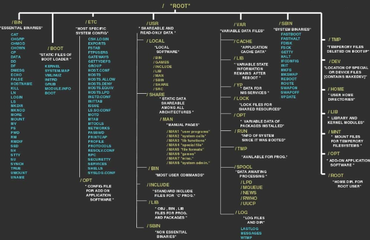
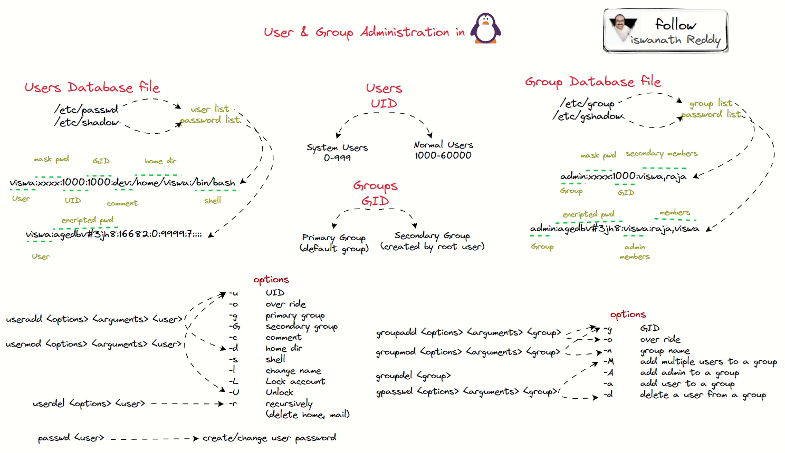
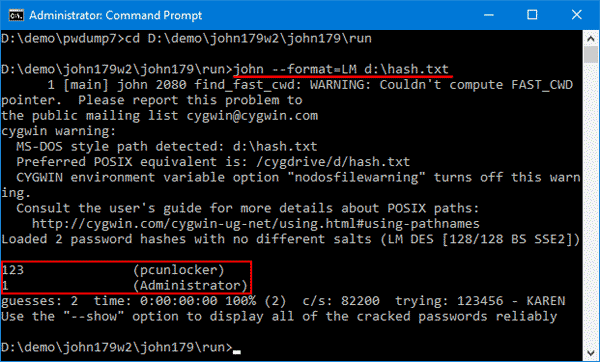
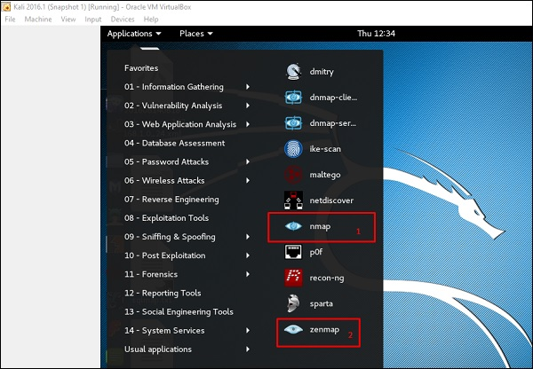

Two assessments are planned: a 2-hour practical exam and a 1-hour multiple-choice question (MCQ) exam. Instruction comprises a one-hour lecture, instructional video, and two-hour practical labs using VLABS virtual machine. Room availability includes LG 0.07, BK 0.11, and PK 0.20. All sessions are mandatory, with optional advanced tasks and additional reading or lab materials.
What is Covered
Students will implement the penetration testing methodology for finding common weaknesses and known exploits, evaluate and exploit specific vulnerabilities, and analyze and make recommendations.
Exam Information
The 2-hour Penetration Testing exam is scheduled for Wednesday, 20 March, 2024, in rooms LG 0.07/PO.04. It involves implementing penetration testing techniques, presenting recommendations for exploited vulnerabilities, and submitting the findings via Moodle. A detailed marking scheme is available in the coursework description.
Practical Demonstration
Activities include passive and active information gathering, social engineering and phishing, using known exploits, and post-exploitation activities like privilege escalation and pivoting.
Defenses
Defensive measures covered in the course include firewalls, intrusion detection and prevention systems, regular testing, effective policies, training, patch management, and threat intelligence.
Key Information to Learn
Key learning areas encompass understanding of computers and networking, human psychology, Linux, scripting, computer security basics, and specific applications and vulnerabilities. Engaging with communities and practical exercises on platforms like Tryhackme.com and Hack the Box are encouraged.
Recommended Reading
Exploiting Software: How To Break Code - Gary McGraw and Greg Hoglund
Sockets, Shellcode, Porting, and Coding - James C Foster
The Hacker Playbook 3: Practical Guide to Penetration Testing - Peter Kim
Video Tutorial: Basic User Creation and Linux Password Cracking
Lab 1: Exercises
Navigating the Linux Terminal
Practice navigating directories, viewing system information, and managing files within the terminal.

User and Group Management
Add new users, modify group memberships, and explore file permissions.

Password Hashing and Cracking
Use John the Ripper to crack password hashes and understand the importance of strong passwords.

Information Gathering Techniques
Perform DNS enumeration, range scanning, and service enumeration with tools like Nmap and Nikto.

Exploiting Web Vulnerabilities
Explore common web application vulnerabilities such as SQL injection and utilize scanners to detect potential exploits.